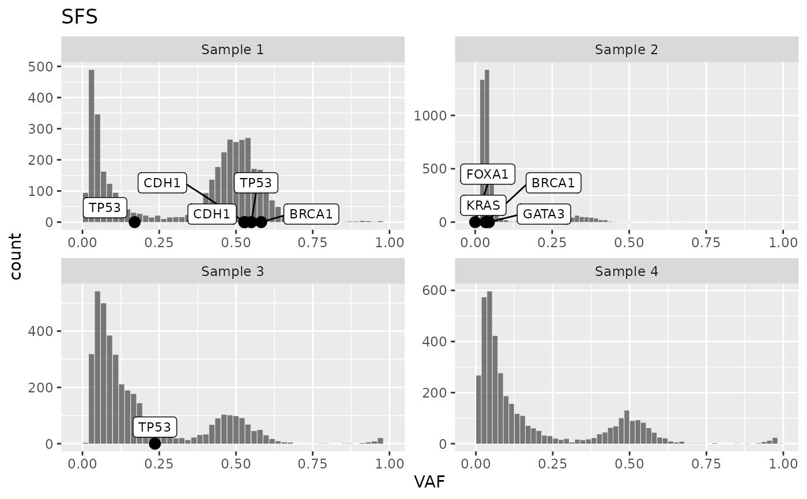

Site Frequency Spectra
sfs.RdCreates cevodata$models$SFS with the groupping variables and:
n columnt with the number of mutations in the VAF interval
x and y columns describing SFS
y_scaled with y values scaled to the range 0-1
Usage
calc_SFS(object, ...)
# S3 method for cevodata
calc_SFS(object, bins = NULL, ...)
# S3 method for cevo_snvs
calc_SFS(object, bins = NULL, ...)
plot_SFS(object, ...)
# S3 method for cevodata
plot_SFS(object, mapping = NULL, ..., geom = "bar")
get_SFS(object, ...)
# S3 method for cevodata
get_SFS(object, model_name = "SFS", verbose = TRUE, ...)Arguments
- object
SNVs tibble object
- ...
other arguments
- bins
resolution of the cumulative tails calculation
- mapping
aes()
- geom
geom
- model_name
name of slot with SFS statistics
- verbose
verbose?
Functions
calc_SFS(): Calculate SFScalc_SFS(cevodata): Calculate SFScalc_SFS(cevo_snvs): Calculate SFSplot_SFS(): Plot SFSplot_SFS(cevodata): Plot SFSget_SFS(): Get SFSget_SFS(cevodata): Get SFS
Examples
data("tcga_brca_test")
tcga_brca_test |>
calc_SFS() |>
plot_SFS() +
layer_mutations(tcga_brca_test, drivers = "BRCA")
#> Warning: Ignoring unknown aesthetics: width
#> Warning: Ignoring unknown aesthetics: shape
#> Warning: ggrepel: 15 unlabeled data points (too many overlaps). Consider increasing max.overlaps
#> Warning: ggrepel: 8 unlabeled data points (too many overlaps). Consider increasing max.overlaps
#> Warning: ggrepel: 19 unlabeled data points (too many overlaps). Consider increasing max.overlaps
#> Warning: ggrepel: 16 unlabeled data points (too many overlaps). Consider increasing max.overlaps
